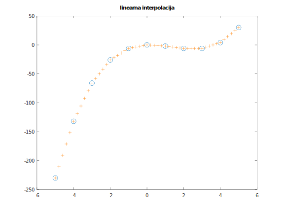
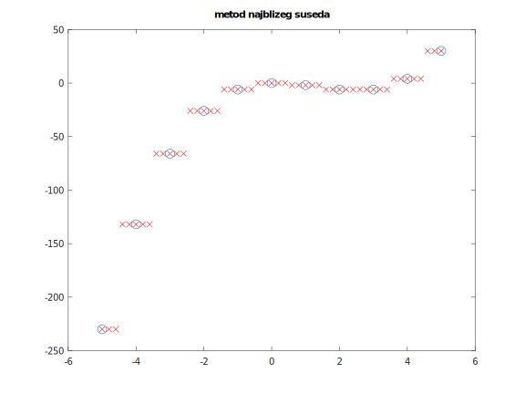
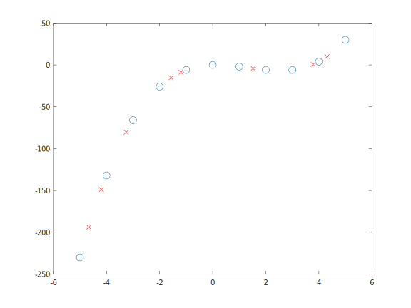
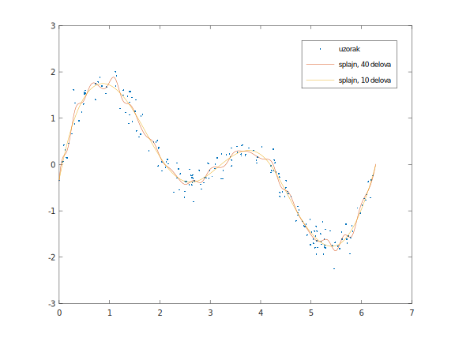
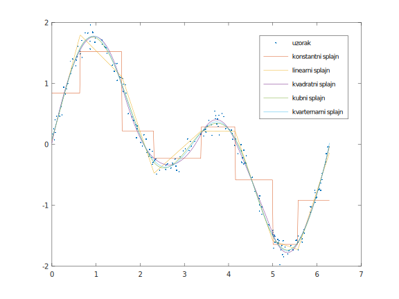

Линеарна интерполација
У програмском језику Octave имплементиране су многе функције за интерполацију. Неке од њих ћемо разматрати у овој секцији.
Најједноставнији вид интерполације је да вредност функције у некој тачки апроксимирамо само на основу вредности функције у њеним најближим суседима.
Можемо јој доделити вредност најближег мањег од њега, вредност најближег већег од њега, вредност ближег од та два или линеарну интерполацију
њихових вредности. Ако су тачки x најближе тачке xa и xb, и вредности функције у тим тачкама су редом
ya, yb, тада вредност у тачки x методом линеарне интерполацијњ рачунамо на следећи начин:
Наведене типове интерполације у програмском језику Octave можемо вршити коришћењем функције interp1 која за аргументе редом узима низ тачака,
низ вредности функције у одговарајућим тачкама и низ тачака у којима желимо да одредимо вредност функције. Подразумеван је метод линеарне интерполације.
Уколико желимо да користимо методу најближег суседа, то можемо урадити додавањем одговарајућег аргумента: "previous", "next" или "nearest".
Коришње поемнуте функције можемо видети на примеру:
>> x = [-5:1:5];
>> y = x.^3 - 4*x.^2 + x;
>> plot(x,y,"o","markersize",10); hold on;
>> xi = [-5:0.2:5];
>> yi = interp1(x,y,xi);
>> plot(xi,yi,"+", "color",[1 0.5 0]);
>> yn = interp1(x,y,xi,"nearest");
>> plot(xi,yn,"x", "color","red");

Наведени начини раде брзо, али добијена функција не мора бити глатка. Функцијом interp1 можемо добити и кубни сплајн који има гладак први и други извод навођењем аргумента "spline", као и део-по-део кубни Ермитеов интерполациони
полином (piecewise cubic Hermite interpolating polynomial) који има гладак први извод навођењем аргумента "pchip". Информације о добијеном "део-по-део" полиному добијамо навођењем
додатног аргумета "pp" (piecewise polynom), и њега можемо евалуирати коришћењем функције ppval као у примеру:
>> pp = interp1(x,y,"pp","spline")
pp =
scalar structure containing the fields:
form = pp
breaks =
-5 -4 -3 -2 -1 0 1 2 3 4 5
coefs =
1.00000 -19.00000 116.00000 -230.00000
1.00000 -16.00000 81.00000 -132.00000
1.00000 -13.00000 52.00000 -66.00000
1.00000 -10.00000 29.00000 -26.00000
1.00000 -7.00000 12.00000 -6.00000
1.00000 -4.00000 1.00000 0.00000
1.00000 -1.00000 -4.00000 -2.00000
1.00000 2.00000 -3.00000 -6.00000
1.00000 5.00000 4.00000 -6.00000
1.00000 8.00000 17.00000 4.00000
pieces = 10
order = 4
dim = 1
orient = first
>> xpp = [-4.67 -1.2 -3.26 -4.2 4.31 1.52 3.78 -1.57];
>> ypp = ppval(pp,xpp);
>> plot(x,y,"o","markersize",10);
>> plot(xpp,ypp,"x","color","red");

Интерполациони полиномом
Уколико функцију желимо да апроксимирамо полиномом, то можемо учинити коришћењем функције polyfit. Повратна вредност биће коефицијенти полинома датог степена који има минималнну средњеквадратну грешку
за дате податке.
Део-по-део полином добијамо функцијом splinefit навођењем броја еквидистантних прекида или експлицитно задатог низа прекида и жељеног степена (подразумевано је у питању кубни слпајн) као у примеру:
>> x = 2 * pi * rand (1, 200);
>> y = sin (x) + sin (2 * x) + 0.2 * randn (size (x));
>> breaks = linspace (0, 2 * pi, 41);
>> pp1 = splinefit (x, y, breaks);
>> pp2 = splinefit (x, y, 10);
>> xx = linspace (0, 2 * pi, 400);
>> y1 = ppval (pp1, xx);
>> y2 = ppval (pp2, xx);
>> plot (x, y, ".", xx, [y1; y2])
>> legend ({"stvarni podaci", "splajn, 40 delova", "splajn, 10 delova"})
 Сплајн степена k је k-1 пута непрекидно диференцијабилан. Разлику између сплајнова различитих степена видимо на примеру:
>> x = 2 * pi * rand (1, 200);
>> y = sin (x) + sin (2 * x) + 0.1 * randn (size (x));
>> pp1 = splinefit (x, y, 8, "order", 0);
>> pp2 = splinefit (x, y, 8, "order", 1);
>> pp3 = splinefit (x, y, 8, "order", 2);
>> pp4 = splinefit (x, y, 8, "order", 3);
>> pp5 = splinefit (x, y, 8, "order", 4);
>> xx = linspace (0, 2 * pi, 400);
>> y1 = ppval (pp1, xx);
>> y2 = ppval (pp2, xx);
>> y3 = ppval (pp3, xx);
>> y4 = ppval (pp4, xx);
>> y5 = ppval (pp5, xx);
>> plot (x, y, ".", xx, [y1; y2; y3; y4; y5])
>> legend ({"uzorak", "konstantni splajn", "linearni splajn", "kvadratni splajn", "kubni splajn", "kvarternarni splajn"})
